Module 3 — Industrial Graphics | Pages 141-154
Section 1 – Introduction to Industrial Graphics
AVEVA™ Operations Management Interface 2023
Section 1 – Introduction to Industrial Graphics
Introduction
Industrial graphics can be used to customize graphic representations of your processes in a view
application. They can be embedded in or linked to automation objects, providing an efficient way to
visualize object-specific information in your application, such as processing status, alarms, history,
and more. They also support the use of custom properties, relative references, scripts, and more.
Industrial graphics are also known as symbols. Prebuilt libraries of symbols are provided with
System Platform, including the Industrial Graphic Library and the Situational Awareness Library.
You can use symbols from these libraries in your applications, or create your own symbols with the
Graphic Editor in the System Platform IDE.
Graphics Tab
The Graphics tab in the System Platform IDE hosts libraries of symbols, controls, profiles, layouts,
and other graphic-related content that can be used in the Galaxy. Items available on the Graphics
tab by default depend on which Galaxy template was used to create the Galaxy.
For example, the following shows the default items on the Graphics tab for a Galaxy created with
the Blank template, which creates a Galaxy based on the Default_EMPTY.cab Galaxy type. It
contains pre-built symbol libraries, as well as a basic set of OMI Apps, widgets, and controls.
This section introduces industrial graphics, including managing them in the System Platform IDE
and the out-of-the-box symbol libraries provided with Application Server. It also provides an
overview of Situational Awareness concepts.
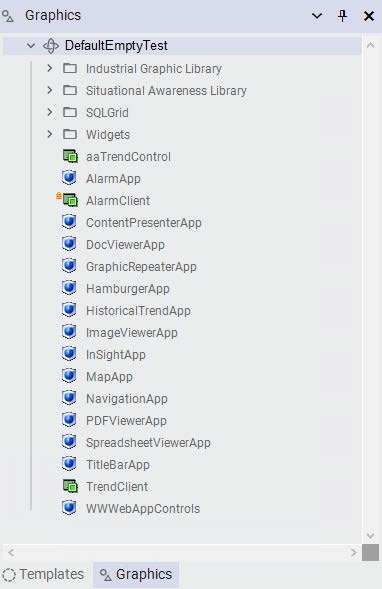
Module 3 – Industrial Graphics
AVEVA™ Training
As another example, the following shows the default items in the Graphics tab for a Galaxy
created with the Default template, which creates a Galaxy based on the Default.cab Galaxy type. It
contains pre-built symbols, screen profiles, and layouts, as well as OMI Apps, widgets, and
controls.
Some of the pre-built content items provided by default on the Graphics tab are specifically for
Operations Management Interface ViewApps. Some examples are screen profiles, layouts, and
out-of-the-box OMI Apps.
Graphic Toolsets
Symbols, controls, and other items listed in the Graphics tab can be organized into a hierarchy of
toolsets. Some toolsets are included on the Graphics tab by default, depending on the Galaxy type
used to create the Galaxy. You can also create your own toolsets and sub-toolsets to organize
your symbols, controls, and other items as needed.
Graphic toolsets and the organization of items within the Graphics tab are shared by all users of
the Galaxy. Top-level graphic toolsets can be hidden or shown in the toolbox as needed, which in
turn will hide or show any sub-toolsets. The configuration is associated with the currently logged-in
user and saved as part of the Galaxy configuration. This allows users to access the Galaxy from
different computers using the System Platform IDE and retrieve their custom views of the Graphics
tab.
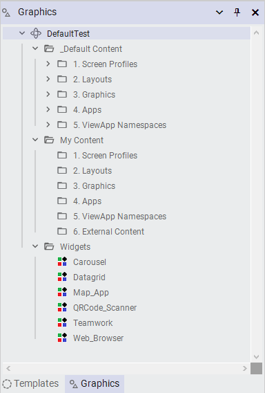
Section 1 – Introduction to Industrial Graphics
AVEVA™ Operations Management Interface 2023
Symbol Management
Depending on your application development needs, you can create symbols in the Graphics tab or
create them directly in automation objects. Some guidelines include:
Create symbols on the Graphics tab to use them as reusable, standard symbols.
Create symbols in an object template to use them in objects derived from the template.
Create symbols in an object instance to use them only in that object instance.
Symbols created within automation objects only exist in the objects and are not listed on the
Graphics tab.
Create Symbols on the Graphics Tab
To create a symbol on the Graphics tab, right-click the Galaxy name or a toolset name on the
Graphics tab and select New | Symbol. The default name for the newly created symbol is
Symbol_00n, where n is the number of the symbol, but you can rename the symbol. Once created,
you can double-click the symbol to edit it in the Graphic Editor.
Import and Export Symbols
You can export one or more selected symbols or graphic toolsets to an aaPKG file. From the
Graphics tab, select the symbols or graphic toolsets that you want to export. Then from the Galaxy
menu, select Export | Object(s).
Note that when exporting automation objects that contain symbols:
The symbols are exported with the automation objects.
Exporting all automation objects also exports all symbols contained by automation objects
and all symbols on the Graphics tab.
If symbols in an automation object contain embedded symbols from the Graphics tab, then
these symbols along with the ones on the Graphics tab are all exported with the
automation object.
If symbols in an automation object contain symbols embedded from other automation
objects, exporting the automation object does not export other automation objects and
their symbols.
If a symbol on the Graphics tab contains embedded symbols from an automation object,
exporting the symbol can also export embedded symbols and its host automation object.
The export process preserves the toolset hierarchy containing the symbol.
You can import symbols from an aaPKG file to the Graphics tab.
Note that when importing automation objects that contain symbols:
When you import templates or instances that contain symbols, the symbols are imported
with the template or instance.
When you import all automation objects, the contained symbols and the symbols in the
graphic toolsets are also imported.
Module 3 – Industrial Graphics
AVEVA™ Training
Symbol Libraries
Two symbol libraries are provided on the Graphics tab for all Galaxy types:
Industrial Graphic Library contains pre-built, realistic-looking symbols of standard
industrial objects.
Situational Awareness Library contains pre-built symbols with a simplified look and
minimum visual detail, designed to enhance an operator’s situational awareness of current
process conditions.
Situational Awareness Visualization
Situational awareness visualization provides an operator with contextual information to allow them
to figure out what actions to take. In broad terms, it can be broken down into three levels: the
perception of new information, the comprehension of the information, and the projection of
impact the information has on goals. Achieving proper situational awareness can help you make
effective decisions to deliver overall business success.
In an HMI/SCADA application, situational awareness is a visual design approach devoted to
providing operators with the most relevant and necessary information at the right time. The idea is
to present users with contextualized and easily-interpreted information that is specific to the most
important process issues, while filtering out “visual noise” to keep operators focused on what
matters most. Operators see the situation at hand in full context of what is happening in real time,
how the current situation links to previous events, and where the process might be headed. This
enables operators to more easily move from perception to comprehension and then to projection
for better and safer operating conditions.
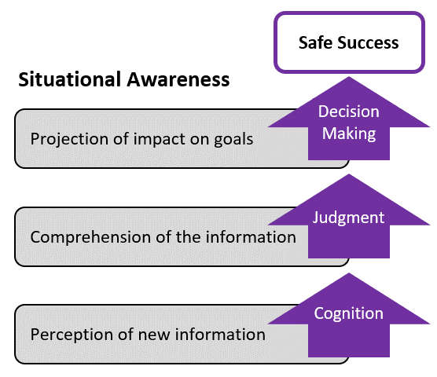
Section 1 – Introduction to Industrial Graphics
AVEVA™ Operations Management Interface 2023
The situational awareness approach also encourages standardization, which helps to eliminate
the confusion of an inconsistent use of color and other visual elements. Some of the benefits of
incorporating situational awareness principles into visualization applications include:
Faster problem identification
Maximized uptime
Accelerated alarm recognition
Increased operational consistency
Safer conditions
System Platform includes features and tools that allow the creation of displays based on
situational awareness concepts.
Situational Awareness Library Symbols
The Situational Awareness Library provided with System Platform contains symbols created with
situational awareness in mind. The symbols have a simplified look and provide a minimum of
visual detail to efficiently convey their functional purpose and status, without showing extraneous
information that could be distracting to operators.
By default, symbols in the Situational Awareness Library use a color palette designed to increase
the contrast between normal operating conditions and abnormal operating conditions. Normal
operating conditions are shown in largely monochromatic colors, while abnormal operating
conditions are shown in more vivid colors.
Most Situational Awareness Library symbols are designed as symbol wizards that incorporate
multiple visual and functional configurations in each symbol. Selecting a functional configuration of
a symbol is a simple matter of selecting options from the symbol’s Wizard Options. One example is
the SA_Meters symbol, which can be used as a flow meter, temperature meter, level meter, or
other meter types simply by configuring Wizard Options for the symbol.
Situational Awareness Library symbols are provided with an extensive set of default custom
properties. The properties can be set to show or hide parts of the symbol itself, set a full array of
alarm conditions, and show reported values based on the configuration.
Symbols in Automation Objects
When adding symbols into an automation object, you can create symbols in the object and then
develop the symbol as needed. These symbols become content of the automation object.
Alternatively, you can create symbols on the Graphics tab and use the linked content feature,
whereby you directly link external symbols from the Graphics tab to the automation object. Linked
symbols remain on the Graphics tab, but are associated with the automation object as its content.
[$gArea]` (text/chart thumbnail)
2. Overview [Line1_Overview] (bar graph thumbnail)
• Status: "2 of 2 displayed, 1 selected"
• Red arrow points to Link Content button — critical UI element for linking external symbols
Footer: Object name "Line1"
Module 3 – Industrial Graphics
AVEVA™ Training
When editing an object in the Object Editor, you can link an external symbol to the object from the
Content pane on the Attributes tab. Clicking the Link Content button opens the Galaxy Browser,
allowing you to browse for and select a symbol from the Graphics tab to link.
layout to an automation object.
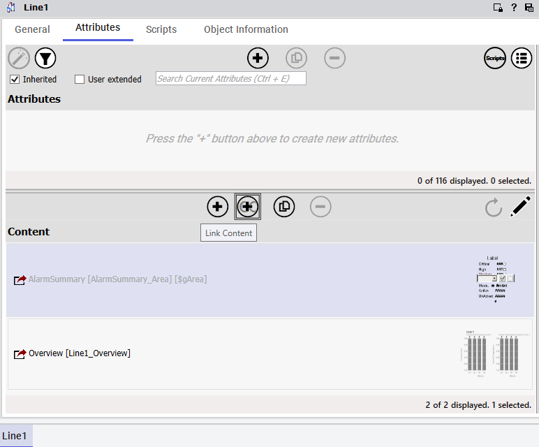
Section 2 – Graphic Editor
AVEVA™ Operations Management Interface 2023
Section 2 – Graphic Editor
Introduction
You can use the Graphic Editor to create, configure, and modify symbols. The editor provides a
drawing area called the canvas, on which you can build symbols. You can embed basic graphic
elements, such as lines, rectangles, curves, and more onto the canvas. Or, you can embed
symbols from Toolbox tab, Assets tab, and Templates tab onto the canvas and use the symbols
as-is or modify them.
The appearance of graphic elements and embedded symbols on the canvas can be changed
through their properties or tools available from toolbars and menus. Additionally, you can configure
elements and embedded symbols with animations, scripts, custom properties, and more.
(1) Toolbars and Menus: Buttons and menu commands for performing various functions,
such as saving the symbol, zooming the display, selecting line color, and more.
(2) Drawing Canvas: Area where elements are placed and arranged to create a symbol.
(3) Elements List: Hierarchical list of elements on the canvas.
(4) Element Tools: Collection of elements that you can use to create symbols on the
canvas. Includes basic elements, such as lines, rectangles, and so on, as well as other
tools and controls.
(5) Tabbed Area:
Properties tab: Lists properties belonging to selected elements or the embedded
symbols on the canvas. When no element is selected on the canvas, this tab lists
properties belonging to the symbol itself.
Assets tab: Provides access to graphics found in instances.
Toolbox tab: Provides access to graphics found in the symbol libraries.
Templates tab: Provides access to graphics found in templates.
This section describes the Graphic Editor, including an overview of its interface and configuration
of embedded symbols.
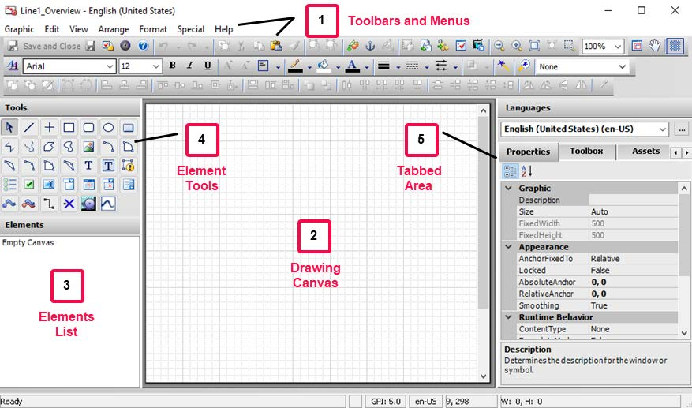
Module 3 – Industrial Graphics
AVEVA™ Training
Properties of the Canvas
When the canvas is selected, the Properties tab updates to show properties of the entire symbol.
The properties are organized into categories, such as the ones listed below.
Graphic: Includes a description of the symbol and canvas sizing properties. By default,
the Size property of a symbol is set to Auto, which automatically sizes the symbol by
cropping all white space outside of the graphics that appear at runtime. When set to Fixed,
the FixedWidth and FixedHeight properties determine the absolute size at runtime. This
allows the designer to add additional white space where desired.
Appearance: Includes anchor properties and smoothing properties.
Runtime Behavior: Includes content types, faceplate mode, scripts, zoom percent
properties.
Custom Properties: Lists custom properties defined for the symbol.
Apply Content Types to Symbols
A content type can be assigned to a symbol using the ContentType property in the Graphic Editor.
The available types match the content types that can be associated with a layout pane.
By default, ContentType for a symbol is set to None. You can check one or more available content
types that apply to the symbol. Symbols can be assigned the All content type, which will match any
type of layout pane.
“Auto-Fill” on page 2-57 and “Content Navigation” on page 2-57.
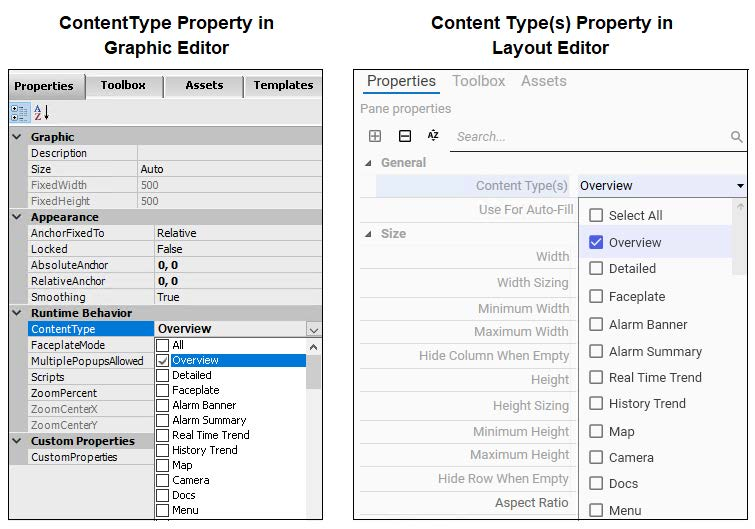
Section 2 – Graphic Editor
AVEVA™ Operations Management Interface 2023
Embedded Symbols
Embedding a symbol creates a linked copy of the original symbol. If the original symbol is
modified, the changes are propagated to all the embedded locations. Existing symbols can be
embedded onto the Graphic Editor’s drawing canvas and edited as needed. They can be
embedded from the Industrial Graphic Library and the Situational Awareness Library in the
Graphics tab, and from templates and instances available in the Galaxy.
In the Graphic Editor, there are two ways of using the Galaxy Browser to select a source symbol to
embed onto the drawing canvas. One way is by clicking the Embed Graphic icon from the Graphic
Editor’s toolbar. Another way is by right-clicking the canvas and selecting Embed Industrial
Graphic from the context menu. Both approaches open the Galaxy Browser, allowing you to select
a graphic from the Graphics tab.
Another way of embedding a graphic is by finding the graphic from Toolbox, Assets, or Templates
tabs available in the Graphic Editor, and then dragging and dropping the symbol from the preview
area onto the canvas. For example, you can navigate to the Situational Awareness Library from
the Toolbox tab and select the Meters toolset. All the symbols in that toolset appear in the Toolbox
tab preview area, and you can drag the symbol you want to embed onto the drawing canvas.
Additionally, the Toolbox, Assets, and Templates tabs include a search feature, allowing you to
search for symbols. For example, on the Toolbox tab, you can enter text in the search box to
search for symbol names that match the text. In this example, the text meter is entered in the
search box and symbols with names that include the search string are found.
Note that embedding a symbol from a template will initiate a process to create an instance, and
then embed the symbol on the canvas.
Once a source symbol is embedded in another symbol, changes to the source symbol are
propagated to all other symbols in which the source symbol is embedded.
An embedded symbol can be customized by configuring its available properties and other
configurations. For example, if wizard options are available for the embedded symbol, they can be
configured as needed. Changes made to the embedded symbol will not impact the source symbol.
The embedded symbol can also be duplicated to create another embedded symbol or converted
to a group of elements.
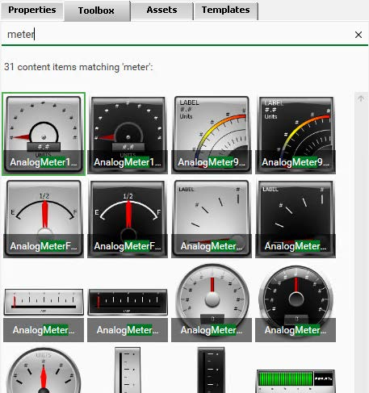
Module 3 – Industrial Graphics
AVEVA™ Training
Properties of Embedded Symbols
Properties for a graphic embedded on the Graphic Editor’s drawing canvas are available on the
Properties tab, when the embedded graphic is selected. The properties are organized into
categories such as the ones listed below, as appropriate for the selected embedded graphic.
Graphic: Name of selected embedded symbol.
Appearance: Parameters related to the appearance of the selected embedded symbol,
such as X and Y location, size, orientation, and more.
Runtime Behavior: Parameters related to visibility, tab order, symbol reference, and other
runtime behaviors.
Custom Properties: User-defined properties that have been created in the embedded
symbol to extend its functionality. Only public custom properties are available in this
category.
OwningObject Property
The OwningObject property is one of the Runtime Behavior properties of an embedded symbol. It
is a runtime property that is used to dynamically change the references within an embedded
symbol from one instance to another.
The OwningObject property can be used as the object reference to replace all "Me." references in
expressions and scripts. The object name can be set, either using the tagname or hierarchical
name of an Automation Object.
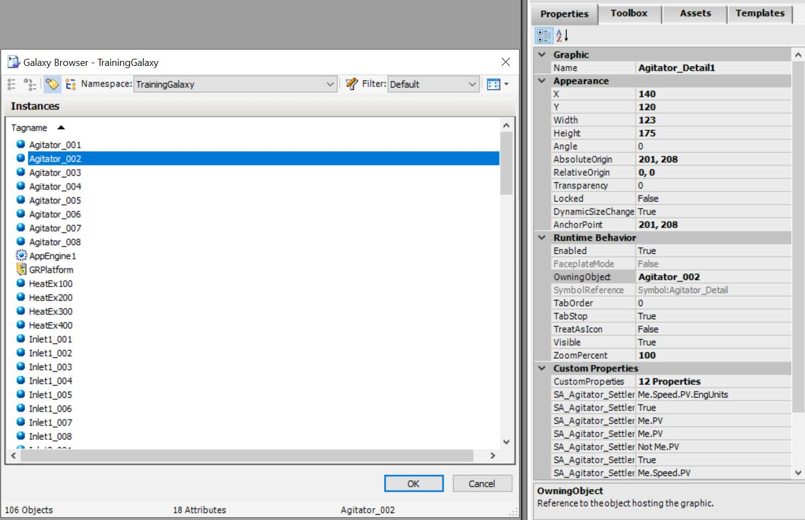
Section 2 – Graphic Editor
AVEVA™ Operations Management Interface 2023
Symbol Wizard Options
If a graphic for which Wizard Options have been configured is selected on the drawing canvas, its
Wizard Options properties appear on the Properties tab. Many of the symbols from the Situational
Awareness Library have Wizard Options already configured.
Custom Properties Configuration
You can configure custom properties with the Edit Custom Properties dialog box. Right-click an
embedded symbol and select Custom Properties. If custom properties are available within the
embedded symbol, the Edit Custom Properties dialog box appears.
Each available custom property has a defined data type, default value, visibility setting, and a
description. The default value is the initial value as defined in the source symbol, which can be
overridden with a value, reference, or expression.
Available custom properties for a selected symbol and their default value configurations are also
listed and editable on the Properties tab in the Graphic Editor.
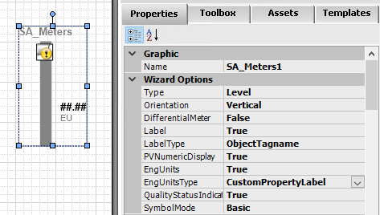
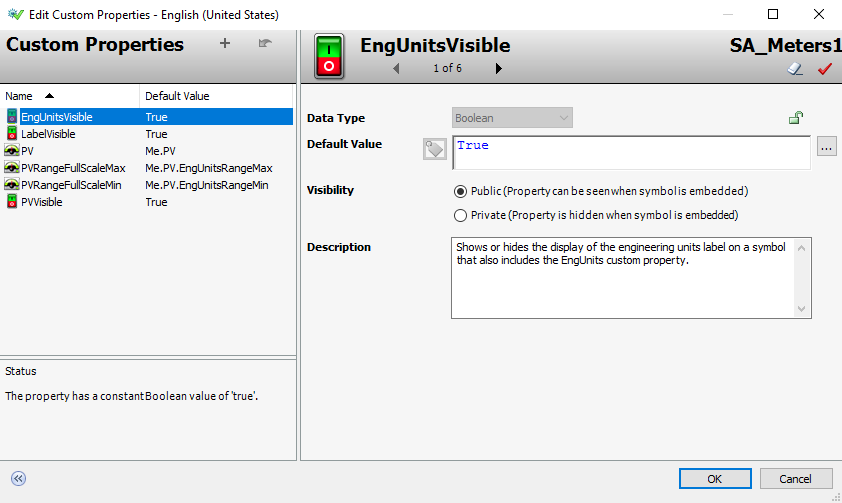
Module 3 – Industrial Graphics
AVEVA™ Training
Substitute Strings
You can search for and replace strings of any element on the canvas that has the Text property.
To substitute strings for an embedded symbol that has text graphics, select the embedded symbol
on the drawing canvas, and then select Special | Substitute Strings from the menu. Or, right-click
the embedded symbol on the canvas and select Substitute | Substitute Strings from the context
menu. The Substitute Strings dialog box appears.
You can use the basic mode to replace the strings in a list, or use Find & Replace functions, such
as Find What and Replace with, Match Case, Use Wildcards, and others.
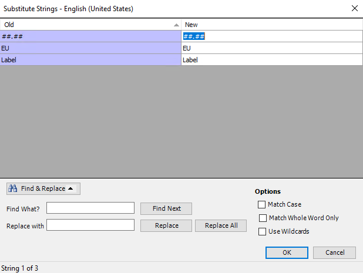
Section 2 – Graphic Editor
AVEVA™ Operations Management Interface 2023
Substitute References
You can search for and replace references used by any element on the canvas.
To substitute references for an embedded symbol that has references configured, select the
embedded symbol on the drawing canvas, and then select Special | Substitute References from
the menu. Or, right-click the embedded symbol on the canvas and select Substitute | Substitute
References from the context menu. The Substitute Reference dialog box appears.
You can use the basic mode to replace references in a list, or use Find & Replace functions, such
as Find What and Replace with, Match Case, Use Wildcards, and others.
is not available in the Substitute Reference dialog box.
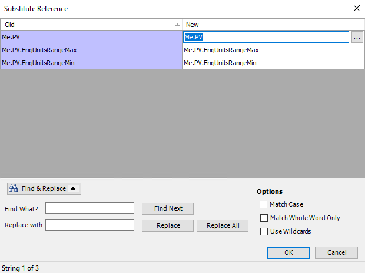
Module 3 – Industrial Graphics
AVEVA™ Training
Review above.